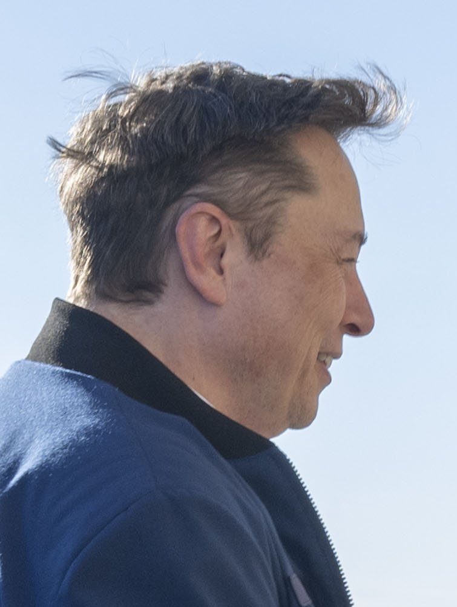
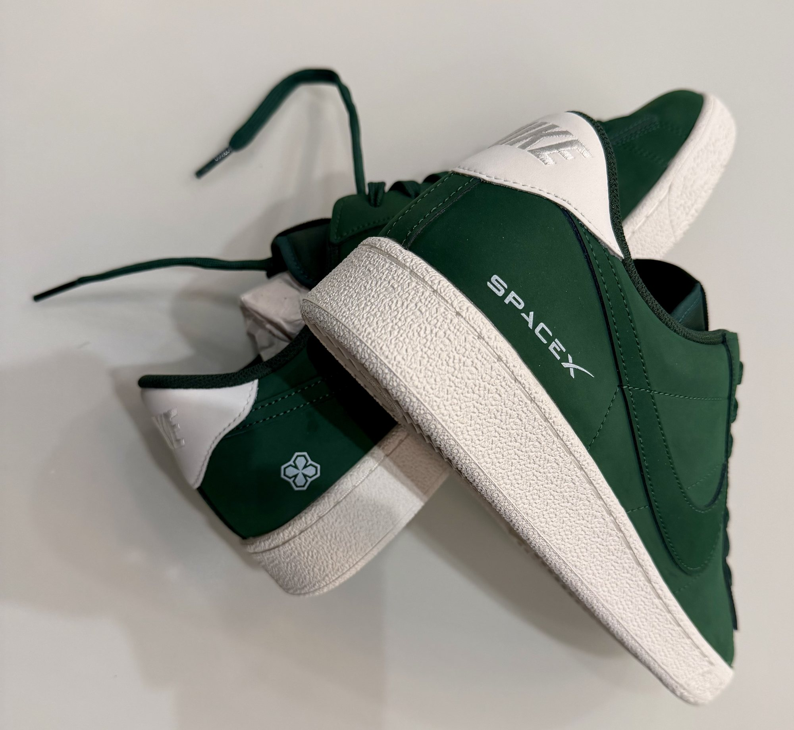
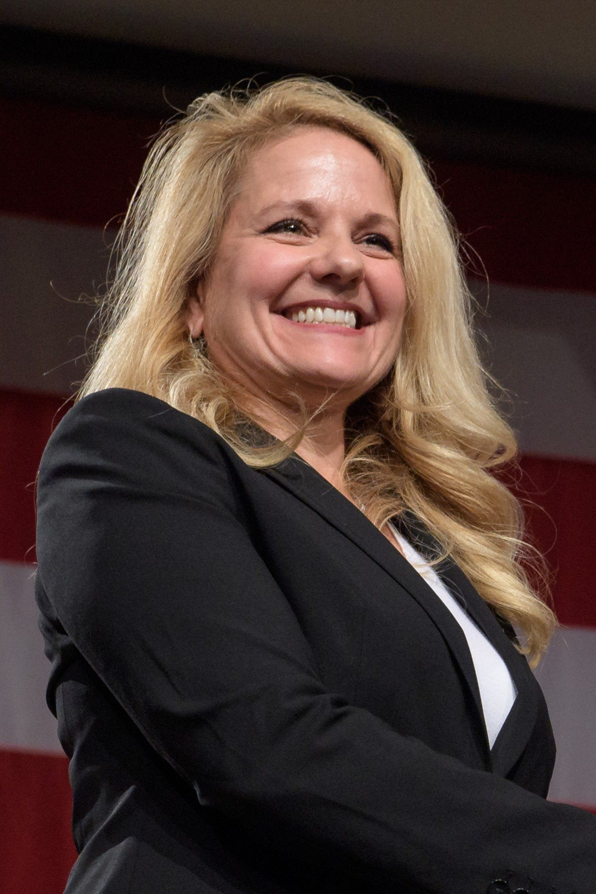

Il 20 ottobre questa pagina raccontava una promessa lanciata in un post: un’azione SpaceX a ogni bambino americano, «la prima di molte». Cinque settimane dopo la promessa ha cambiato natura. Il 25 novembre 2026 SpaceX pubblica sul proprio sito per gli investitori l’impegno a contribuire con un’azione di nuova emissione di Classe A a ogni Trump Account attivo, i conti di risparmio agevolati per i minori statunitensi. Musk annuncia che pareggerà il conto con un’azione presa dal proprio pacchetto. Il giorno del Ringraziamento aggiunge un altro tassello: un’azione in più a tutti i bambini, ogni anno. La differenza non è solo di cifre: questa volta la donazione tocca direttamente il capitale di SpaceX.
Che cosa ha deciso SpaceX
Il testo ufficiale è breve e preciso. SpaceX annuncia l’impegno a contribuire con un’azione di nuova emissione della propria Classe A a ogni Trump Account attualmente attivo. Nello stesso comunicato si legge che Musk, come parte della sua promessa di donare un’azione a ogni bambino d’America, pareggerà personalmente il numero di azioni donate dalla società. La motivazione è quella dei grandi discorsi aziendali: SpaceX costruisce l’infrastruttura del futuro e lavora per rendere la vita multiplanetaria, e la proprietà dell’azienda che crea questi sistemi deve estendersi alla prossima generazione di americani.
Il dettaglio che pesa di più per gli azionisti è «nuova emissione». Le azioni della società non arrivano da un pacchetto già esistente in tesoreria: verranno create. In termini tecnici è una diluizione, piccola in percentuale perché SpaceX ha miliardi di azioni in circolazione, ma reale. Il comunicato chiude con la consueta clausola sulle dichiarazioni previsionali: l’operazione resta soggetta a rischi e approvazioni, anche di terzi e di autorità pubbliche.
Poche ore dopo Musk scrive su X la frase che riassume tutto: ogni bambino in America riceverà due azioni SpaceX, una dalla società e una da lui. Il post supera i trenta milioni di visualizzazioni in un giorno. In un messaggio successivo fissa il calendario: la quota della società sarà trasferita il mese prossimo, quella personale quando scadrà il suo periodo di lockup, a giugno dell’anno prossimo.

Il rilancio del Ringraziamento: un’azione all’anno
Il 26 novembre, rispondendo a un utente, Musk aggiunge: donerà un’altra azione SpaceX a tutti i ragazzi d’America ogni anno. Poco dopo rilancia un commento che stima il valore di questo impegno annuale in oltre 9 miliardi di dollari al prezzo corrente, con il proprio commento: è vitale che i bambini abbiano una partecipazione nel futuro.
Il mercato reagisce subito, anche a borse chiuse per la festa. Sulla piattaforma di trading notturno Blue Ocean ATS il titolo SpaceX sale del 7,47 per cento nella notte fra giovedì e venerdì. Mercoledì, alla vigilia del Ringraziamento, aveva chiuso in rialzo dell’1,30 per cento a 127,44 dollari. Il quadro di fondo però resta prudente: dalla prima promessa di ottobre il titolo aveva perso circa il 13 per cento, dentro una correzione più ampia delle società legate all’intelligenza artificiale.
Una distinzione va tenuta ferma. La doppia donazione del 25 novembre ha un atto ufficiale della società. L’azione annuale, per ora, è una dichiarazione di Musk su X: non c’è un secondo comunicato agli investitori e non è chiaro se l’impegno ricorrente sarà a carico suo, della società o di entrambi. Fino a un documento formale va letta come intenzione, non come obbligo.

Quanto vale, in numeri
La Casa Bianca aveva annunciato a ottobre quasi 70 milioni di Trump Accounts creati, oltre 60 milioni dei quali con iscrizione automatica. I minori negli Stati Uniti sono circa 72 milioni secondo le stime del censimento. Al prezzo di chiusura del 25 novembre, un’azione per ciascuno vale intorno ai 9 miliardi di dollari; due azioni portano il totale vicino ai 18 miliardi. È circa il triplo della donazione di Michael Dell ai Trump Accounts, fino a poco fa la più grande del programma.
Per Musk la quota personale resta piccola rispetto al patrimonio: a giugno deteneva circa 6,42 miliardi di azioni SpaceX, quindi 70 milioni di azioni sono poco più dell’uno per cento del suo pacchetto. Per i bambini, invece, ogni singola azione vale oggi più di un centinaio di dollari, e il valore futuro dipende interamente dall’andamento del titolo. È questo il punto che i sostenitori chiamano educazione al capitale, e che i critici chiamano esposizione a un singolo titolo volatile.
| Data | Chi | Che cosa succede |
|---|---|---|
| 4 luglio 2026 | Governo USA | Partono i Trump Accounts, conti 530A per i minori con numero di previdenza sociale |
| luglio 2026 | Gwynne Shotwell | Annuncia il dono personale di oltre 2 milioni di azioni SpaceX |
| fine settembre | Tesoro USA | Regole temporanee che permettono ai conti di ricevere azioni in dono |
| 19 ottobre | Elon Musk | Promette un’azione a ogni bambino l’anno prossimo, «la prima di molte» |
| 25 novembre | SpaceX | Comunicato: un’azione di nuova emissione per ogni conto attivo, Musk pareggia |
| 26 novembre | Elon Musk | Calendario dei trasferimenti e promessa di un’azione in più ogni anno |
| dicembre 2026 | SpaceX e Shotwell | Trasferimento previsto della quota societaria e del dono Shotwell |
| giugno 2027 | Elon Musk | Scadenza del lockup e trasferimento previsto della quota personale |

Come funzionano i Trump Accounts
I Trump Accounts, chiamati anche conti 530A, sono aperti a ogni cittadino statunitense sotto i 18 anni con un numero di previdenza sociale. Genitori, nonni, amici e datori di lavoro possono versare insieme fino a 5.000 dollari l’anno per ciascun ragazzo, con un limite che sarà indicizzato all’inflazione dopo il 2027. I bambini nati fra il 2025 e il 2028 possono ricevere anche un versamento una tantum di 1.000 dollari dal Tesoro.
Un dettaglio tecnico spiega perché la donazione SpaceX è possibile solo adesso: a fine settembre il Tesoro ha pubblicato regole temporanee che consentono ai conti di ricevere azioni, e non soltanto denaro. È la porta che rende praticabile un dono in titoli su scala nazionale. I conti iscritti in automatico possono ricevere contributi filantropici anche se un genitore non li ha ancora rivendicati; per i versamenti di familiari e per il contributo pubblico serve invece l’attivazione. Resta aperta la domanda su quanti dei circa 70 milioni di conti rientrino nella definizione di «attivo» usata da SpaceX: né la società né il Tesoro lo hanno chiarito.
Dal lancio del 4 luglio famiglie e amici hanno versato oltre un miliardo di dollari, e i depositi totali da tutte le fonti superano i 9 miliardi. Il solo impegno SpaceX, se rispettato per tutti i conti, vale quanto l’intero capitale accumulato finora dal programma.
Perché è una notizia SpaceX, e non solo filantropia
La lettura facile è quella del gesto. Ma qui c’è una scelta di struttura societaria. Una società appena quotata decide di distribuire una quota del proprio capitale a decine di milioni di minori, allargando in un colpo solo la propria base azionaria a una platea senza precedenti per l’azienda. Ogni bambino diventa titolare di un pezzo dell’azienda che costruisce Starship, Starlink e i centri dati orbitali Starmind autorizzati dalla FCC proprio il 25 novembre, lo stesso giorno del comunicato.
Il confronto con il resto del settore tecnologico è esplicito. Anthropic, quotata in borsa all’inizio di novembre, ha scelto la strada opposta: il 5 per cento delle proprie azioni in un fondo per il bene pubblico, gestito centralmente. SpaceX e Musk distribuiscono invece la proprietà direttamente alle persone, una per una. Due modi diversi di rispondere alla stessa domanda: come condividere i guadagni del boom dell’intelligenza artificiale e dello spazio.
Ci sono anche le ombre. Il programma porta il nome del presidente, e il dono SpaceX entra in un dibattito politico già acceso negli Stati Uniti. Chi critica l’operazione ricorda che un portafoglio fatto di un solo titolo è l’opposto della diversificazione. E il valore promesso oggi può cambiare molto prima che i bambini possano usarlo.
Che cosa aspettarsi adesso
Le date da seguire sono tre. A dicembre il trasferimento della quota societaria e, nello stesso mese, del dono di Gwynne Shotwell: sarà la prova concreta che il meccanismo funziona su decine di milioni di conti. A giugno 2027 la scadenza del lockup di Musk e il trasferimento della sua azione personale. E, nel frattempo, un eventuale atto formale sull’azione annuale promessa il giorno del Ringraziamento, oltre a un numero ufficiale dei conti attivi.
Il dossier sull’autorizzazione FCC ai satelliti Starmind passa all’archivio Notizie: questa pagina mette in primo piano la scelta di SpaceX di portare il proprio capitale nelle tasche di una generazione intera. Chi vuole ripercorrere l’inizio della storia trova la promessa di ottobre e il dono di Gwynne Shotwell nell’archivio.
Fonti pubbliche e tracce
Ultimo aggiornamento editoriale: 27 novembre 2026. Nel corpo non si ripete la fonte a ogni frase: le tracce sono raccolte qui. La promessa di un’azione annuale è riportata come dichiarazione di Musk, non come atto della società.
- SpaceX Investor Updates, 25 novembre 2026: impegno a contribuire con un’azione di nuova emissione di Classe A a ogni Trump Account attivo; Musk pareggia; dono di Gwynne Shotwell; clausola previsionale.
- Elon Musk su X, 26 novembre 2026: due azioni SpaceX a ogni bambino d’America, una dalla società e una personale.
- Elon Musk su X, 26 novembre 2026: quota SpaceX trasferita il mese prossimo, quota personale alla scadenza del lockup a giugno 2027.
- Elon Musk su X, 26 novembre 2026 e 27 novembre 2026: un’azione in più a tutti i ragazzi ogni anno; stima rilanciata di oltre 9 miliardi l’anno.
- CNBC, Lora Kolodny, 25 novembre 2026: quasi 70 milioni di conti, regole dei conti 530A, limiti di versamento, contributo da 1.000 dollari, regole temporanee del Tesoro, depositi oltre 9 miliardi.
- CNBC, Jenny Lee, 27 novembre 2026: rialzo del 7,47 per cento su Blue Ocean ATS, chiusura di mercoledì a +1,30 per cento.
- Axios, Ben Berkowitz, 26 novembre 2026: circa 72 milioni di minori, stima da oltre 18 miliardi, confronto con la donazione Dell, calo di circa il 13 per cento dal 19 ottobre.
- The Guardian / Reuters, 26 novembre 2026: chiusura a 127,44 dollari, 6,42 miliardi di azioni detenute da Musk a giugno, confronto con il fondo Anthropic.
Fotografie utilizzabili
Tutte e quattro le immagini sono a licenza libera su Wikimedia Commons: la copertina della Casa Bianca sui Trump Accounts, il ritratto di Elon Musk del Dipartimento della Difesa e la foto NASA di Gwynne Shotwell in pubblico dominio, le scarpe della greenshoe dell’IPO in CC BY 4.0. Per un annuncio finanziario non esistono foto dell’evento: le immagini illustrano i protagonisti e il programma. Dettagli nella scheda dei crediti fotografici.
Apri il dossier Starmind archiviato · Archivio Notizie · Torna a SpaceX